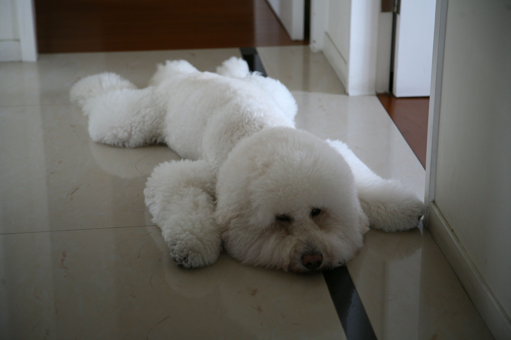

"He's the cutest poodle I've ever seen that just likes to eat ice cream and hang out behind department stores."
-Anonymous
Toby the Poodle was born June 16th 2009 in Taiwan.
"The most fabulous floof of cloud I have ever met since he was a puppy. This dog will always be my first favorite doggo."
-zap.
A typical day for Toby involves taking plenty of afternoon naps, eating good food, playing with his friends, and keeping a watch on his family to make sure they're alright.
"Meow."
-Meowoo

Toby's Favorite Foods:
- Milk
- Ice Cream
- Cheese
- Beef
- Smoked Chicken
"Toby's a good boy."
-Toby88
Toby strives to be the most handsome and caring companion every day.
- Insists on walking in front, then constantly checks behind him to make sure everyone's still there.
- Checks to make sure everyone goes to sleep at night.
"He's a big floofy snowball."
-Bert Bert
Toby has a Facebook Page!
https://www.facebook.com/tobythepoodle